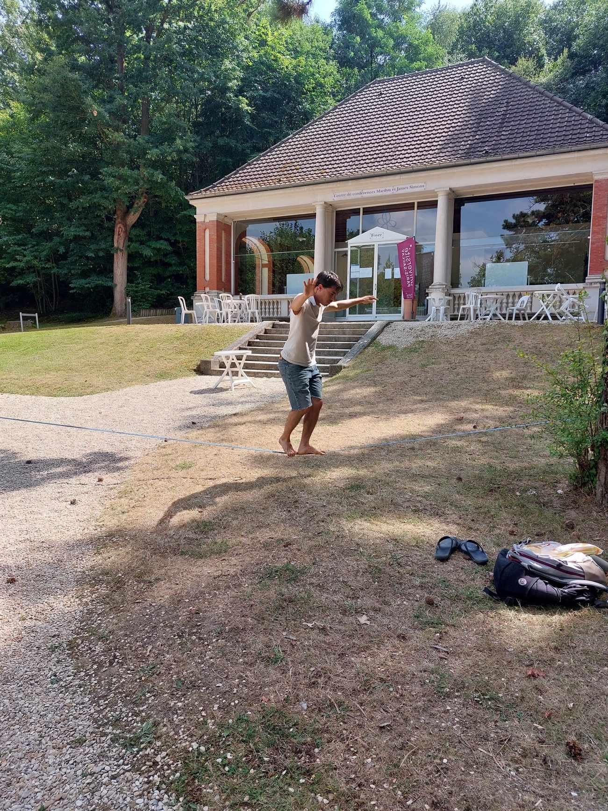

Ian Gleason (Universität Bonn)

I'm a postdoctoral researcher at Universität Bonn, working in the arithmetic geometry group (Arithmetische Algebraische Geometriehere.).
I did my Ph.D. in mathematics at UC Berkeley. My advisor was Sug Woo Shin.
You can find a copy of my CV here, and most likely here.
Publications and accepted preprints:
- Tubular neighborhoods of local models. To appear in Duke Math J. (with J. Lourenço).
- Perfectoid Nullstellensatz: results and counterexamples. To appear in Proc. Amer. Math. Soc.
Preprints:
- Meromorphic vector bundles on the Fargues--Fontaine curve. (with A. Ivanov).
- On the connectedness of p-adic period domains. (with J. Lourenço).
- The connected components of affine Deligne--Lusztig varieties. (with D. G. Lim and Y. Xu).
- On the p-adic theory of local models. (with J. Anschütz, T. Richarz and J. Lourenço).
- On the geometric connected components of moduli spaces of p-adic shtukas and local Shimura varieties.
-
Specialization maps for Scholze's category of diamonds.
My Phd Thesis
Work in progress:
- On the theory of kimberlites. Available upon request.
Teaching:
Contact
- Email: Do what you need to do to "ianandre AT math DOT uni-bonn DOT de".
- Address: Department of Mathematics, Universität Bonn, Endenicher Allee 60, Bonn.
Here, have a rock: